Assignment 3: 3D Printing + Laser Cutting Lamp
My reaction towards 3D printing:

I wanted to make the lamp from Tangled since Tangled is one of my favorite movies and I thought
it would be a fun lamp to make that I would want to display in my room.
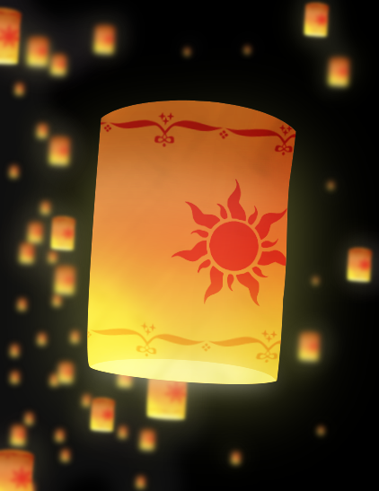
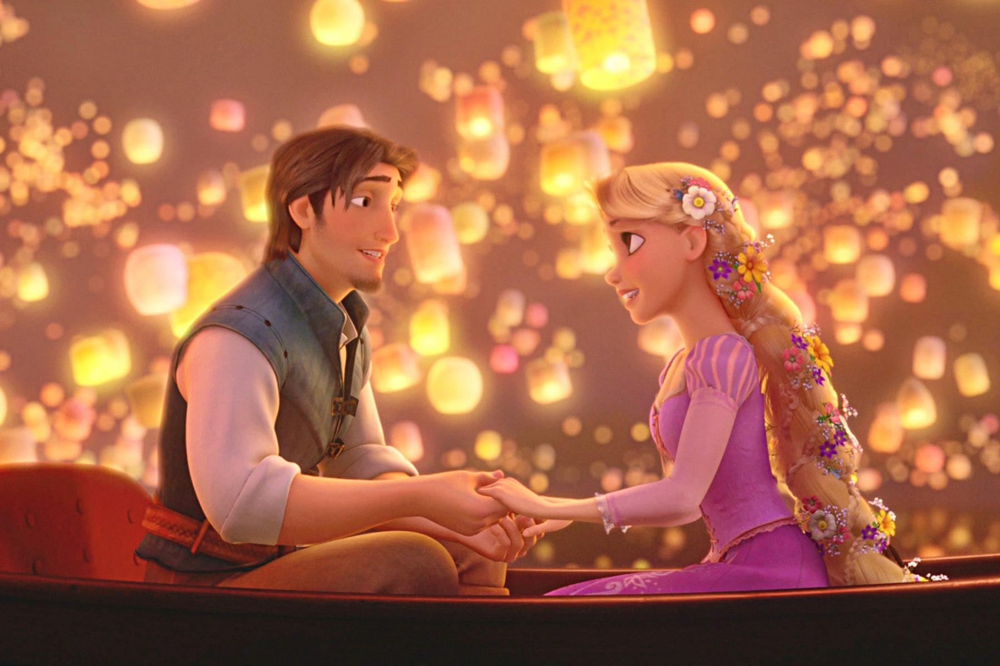
Process
I created the sides of the lamp in illustrator. I traced the outline of the sun and the pattern of the lamp
in Illustrator. I didn't want the lamp to be too small, but my first iteration was way too square so I made
the panels more of a rectangle shape to better resemble the lamp from Tangled. The panels are 4x6 inches
(originally they were 4x4).
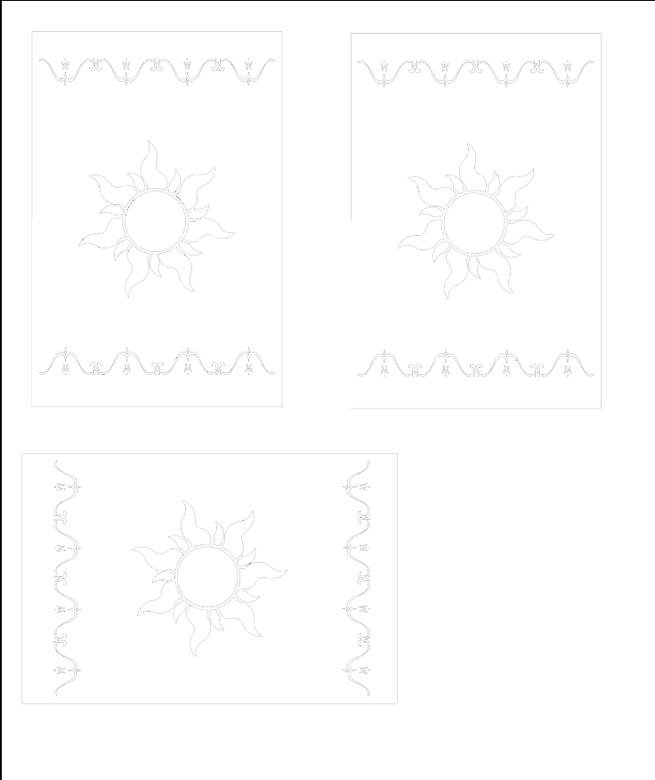
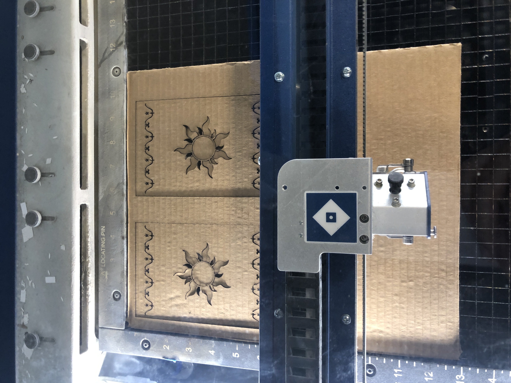
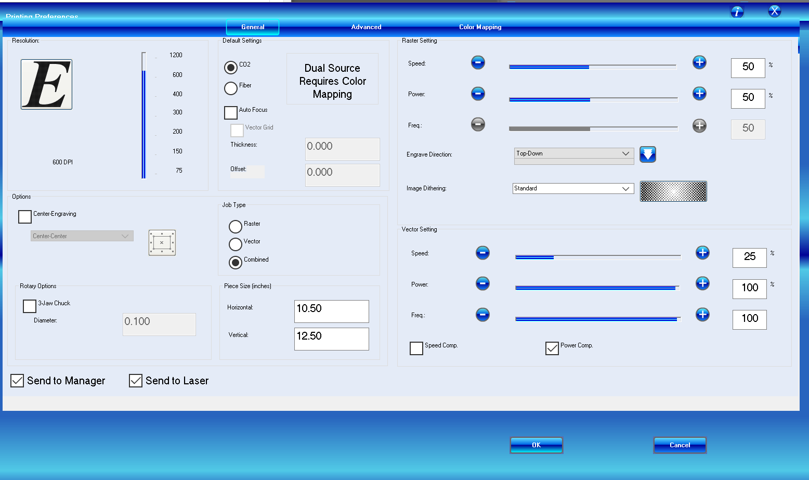
Once I got the fun part out of the way, I focused on the connectors. Since I was making a rectangle table lamp,
I just wanted to make corner connectors. I made two iterations: (1) 1x1in corner connector and (1) .5x.5in corner connector.
I made these shapes by putting together different rectangles and squares in Rhino and trimming the outside boxes to make the
shape I wanted. I used the extrude curve function to create the 3D shape and then I exported to Dremal to print.

Connectors 1 & 2
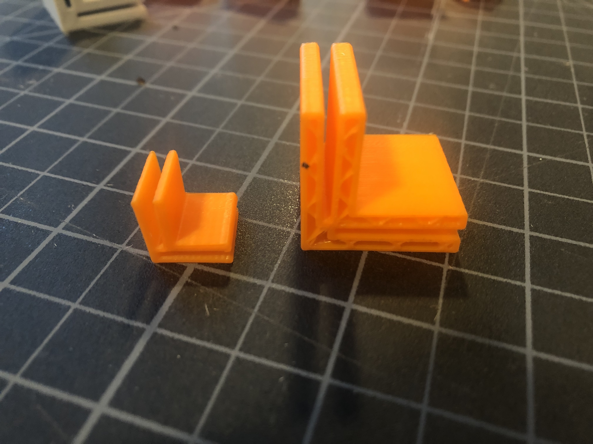
Once I got the connectors printed, I put together the rectangle lamp using the connectors in the corner and the bottom.
Issues
Problem 1-3:
The printer was having issues clearing out the previous filament and I didn't know how to trouble shoot. Had to change filaments.
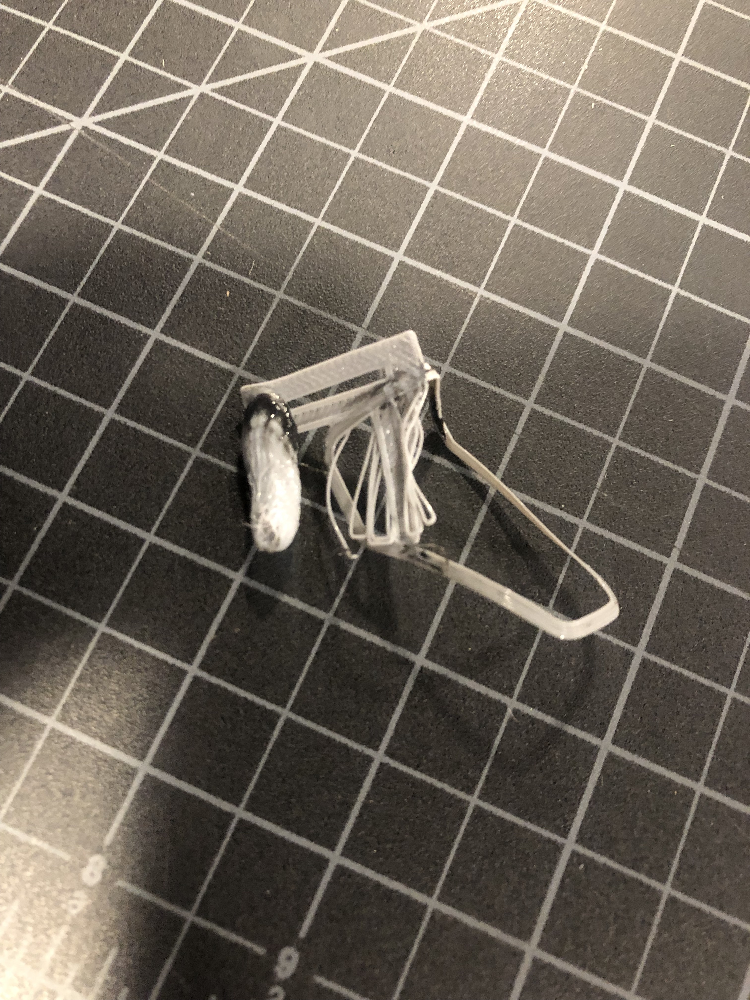
Problem 4:
Glue dried up from having to heat up the printer so many times that it popped off in the middle of printing
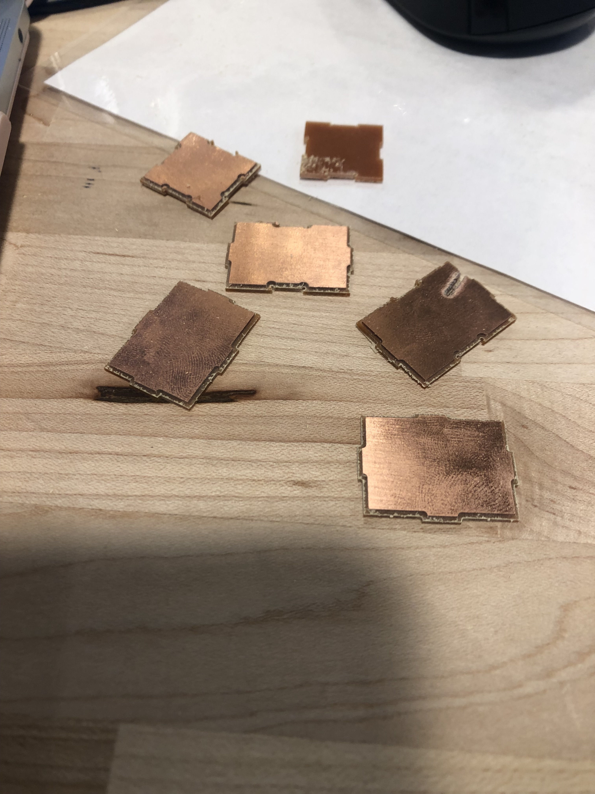
Problem 5:
I don't even know what happened
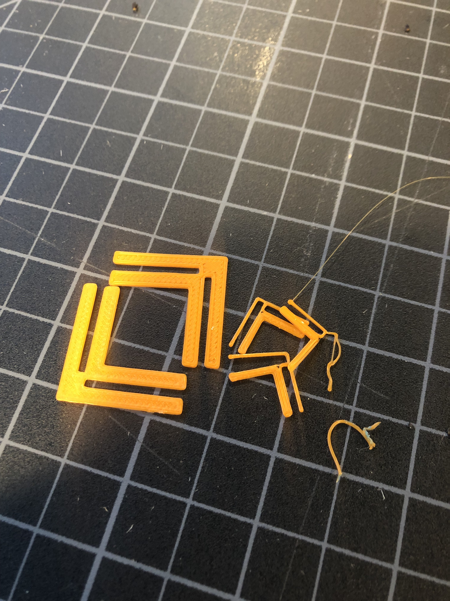
Problem 6:
The large connectors (first iteration) completely broke the wood panels. I had to redo the panels on cardboard.
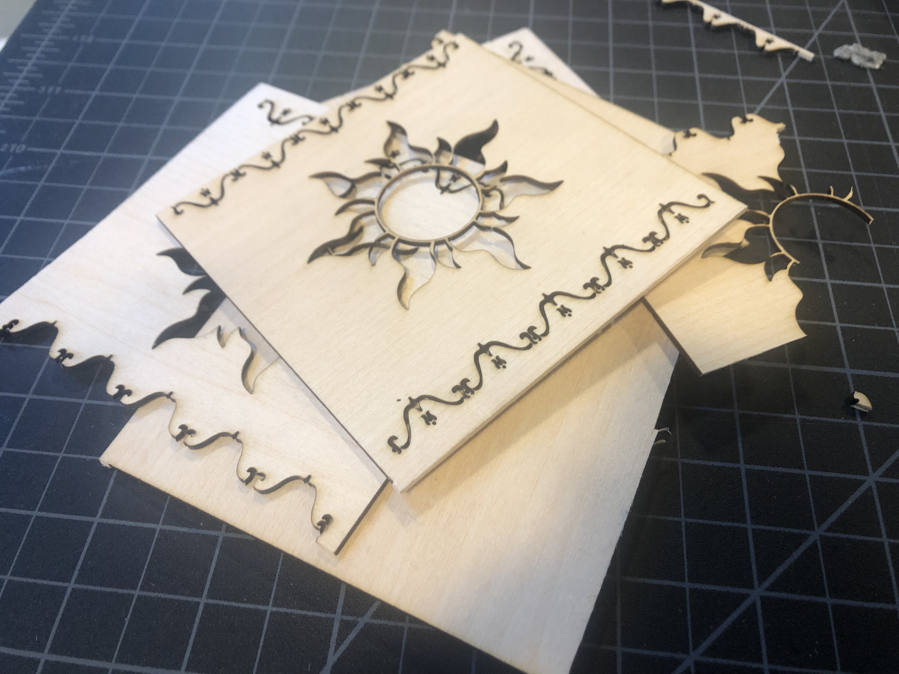
Final Design
My glorious lamp came together and made my tangled dreams come true. I only used the small connectors and did not end up using the larger ones at all.
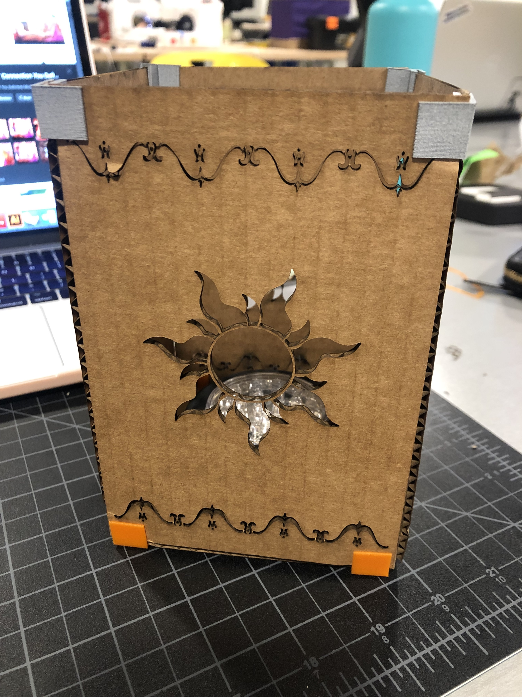

Source Files, Specs and Peer Attributions
Rhino files for Connectors here
Illustrator Files here
STL Files here
Model Specs: PLA, Low Quality, 20% infill, 27 grams
Hannah, Kira and D'Marcus for emotional support during this difficult time